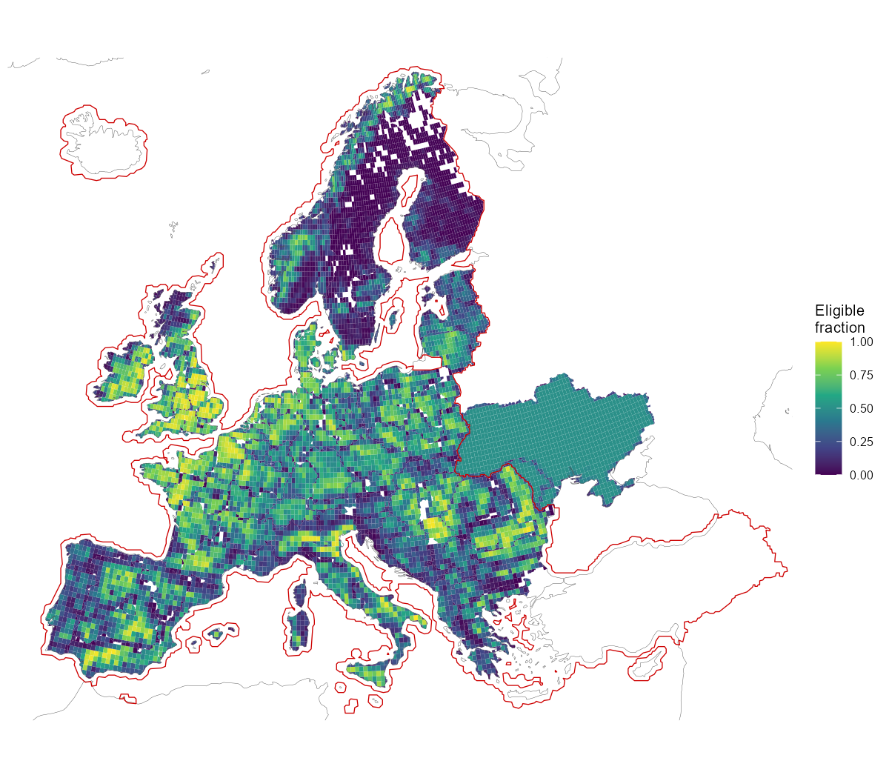
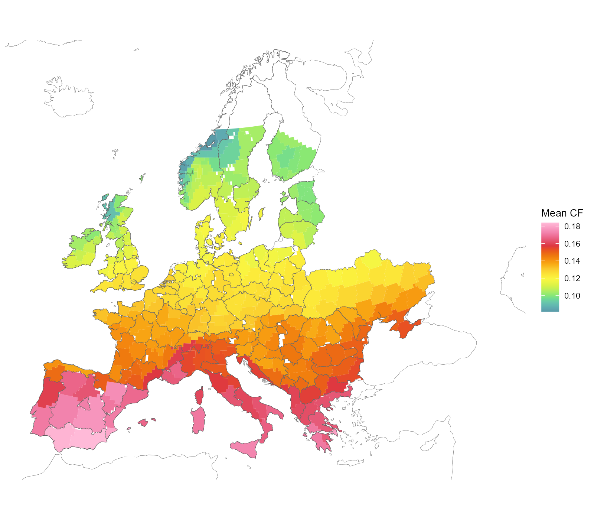
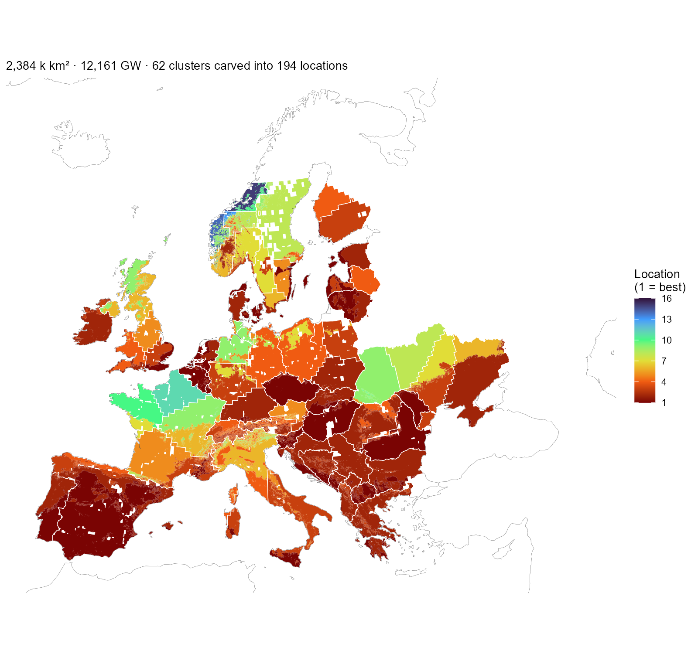
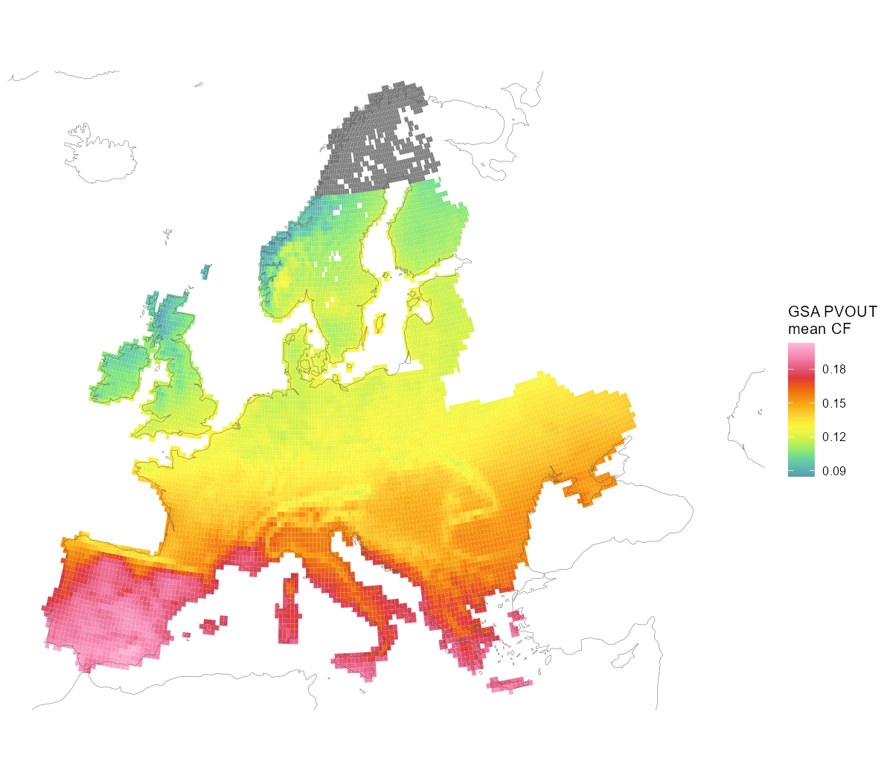
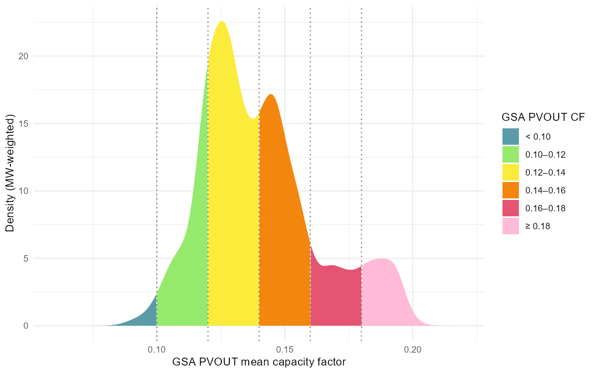
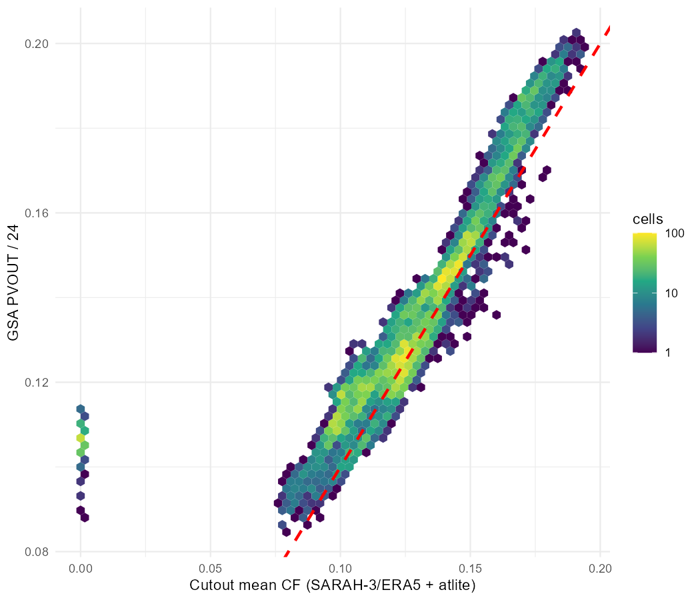
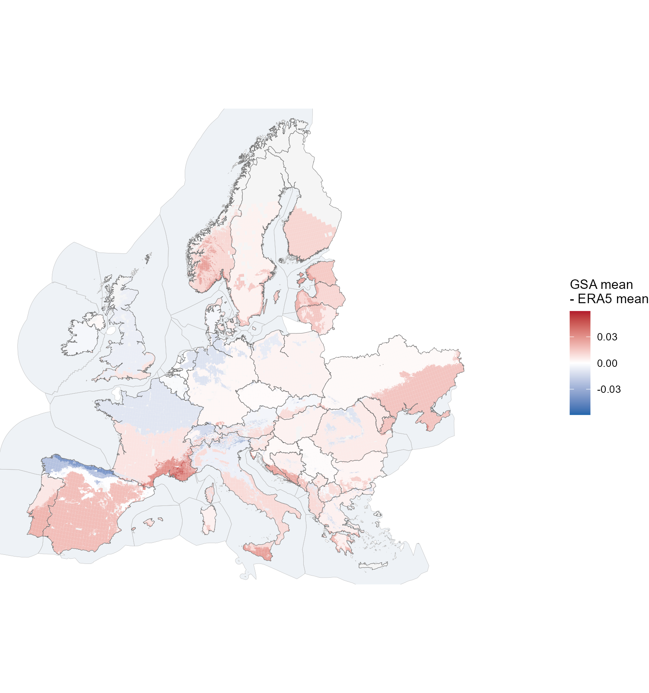

The solar half of the quality-aware resource layer built in
data-raw/cf-workflow/ (the wind half, with the atlas
classification and the calibration machinery, is in the wind article; the upstream pipeline is in
the data-sources article).
PyPSA-Eur’s solar capacity factors are likewise untouched and ship with the replica, taking both potential and variability from the 2025 cutout (SARAH-3 irradiance, ERA5 for the rest). The Global Solar Atlas (v2, ~1 km PVOUT) provides the long-term benchmark; the cutout remains the source of hourly variability. Solar is less diverse by location than wind: the resource is not terrain-driven at the cutout’s ~25 km, and the two instruments agree within ±0.02 across the 41 regions, where wind’s gap reaches +0.19. The level therefore needs no calibration and no low-quality filter. What the atlas adds is a supply curve — six 0.02-wide quality levels across the continent’s 0.09–0.20 range, so a cluster’s land is offered at the level it occupies rather than at one blended number. As on the wind side, this is not part of the shipped models: it arrives with the repository update and ships separately (revised assumptions).
Available land
Solar’s eligibility differs from wind’s mainly in what it admits: urban and artificial surfaces are in (rooftop and urban PV), forests are out.

Available land for solar: eligible share of each region-clipped cell after the land-use exclusions, with the 0.5 coverage derate applied outside the solid red CORINE coverage line.
One reconciliation caveat is worth knowing: eligible area × density
reproduces PyPSA’s solar p_nom_max except for +1.8%, and
the entire difference sits in cells north of 65°N — SARAH-3 has no data
there, and PyPSA silently drops that eligible land from the solar
potential rather than excluding it by policy. Groups with no usable
solar irradiance data are likewise excluded from this layer.
Clustering
Per-cell hourly capacity factors (the same fixed-tilt panel assumptions as PyPSA) are clustered by profile shape — weighted k-medoids on correlation distance over mean-normalized series, area weights — with the number of clusters per country the smallest that keeps the weighted information loss under the 5% tolerance. Solar profiles are dominated by latitude and the shared diurnal cycle, so the whole continent resolves to 62 clusters (wind, at its own tolerance, needs 287):

Solar clusters on the region-clipped cells (cell × NUTS1), coloured by mean capacity factor.
What the model finally receives is neither of those. Its unit of supply is a location: one (cluster × level) pair, holding its own piece of land at its own capacity factor. The pairs do not overlap — within a country their areas sum to their union — so a location is a real place, not an accounting category, and a country offers as many as its clusters have levels. Spain is a single cluster carved into six levels, so it offers six locations, not one; France’s four clusters carry sixteen between them.

The solar layer as the model receives it: every installable piece coloured by its location number — the (cluster × level) pair’s rank within its country, best first — with white cluster boundaries on top. One location is one colour inside one outline. Spain’s single cluster carves into six locations, France’s four into sixteen; the subtitle counts those that reach the nodes with capacity, matching the table below.
The solar atlas check
The wind layer earned its atlas treatment because the Global Wind
Atlas disagrees with the cutout systematically (median ratio 0.63). The
solar mirror of that comparison uses the Global Solar Atlas (World
Bank/ESMAP, Solargis data, CC-BY-4.0): PVOUT, the long-term average
daily specific yield in kWh/kWp at ~1 km, read as a capacity factor
(PVOUT / 24) over the same eligible land. Two assumption
differences are worth stating before the map: the atlas assumes
optimally tilted crystalline-silicon PV with its own performance-ratio
chain (~0.81), while PyPSA/atlite uses a fixed 35° tilt and its own loss
model; and the atlas raster stops at 65°N — the same northern limit as
SARAH-3, so the no-data groups already excluded from this layer stay
excluded.

GSA PVOUT over the solar-eligible cells, read as a capacity factor (PVOUT / 24). Grey = no atlas data (≥ 65°N, the same limit as SARAH-3).
![The same atlas carved into the six quality classes at ~1 km — all available atlas data in the map window, beyond the model domain (Turkey, the African rim, the eastern neighbours), with country outlines for orientation. The gradient is mostly latitude, but real sub-country structure survives: Alpine and coastal pockets, the Scottish Highlands below 0.10, Iberia above 0.18. Blank land carries no atlas data: north of 65°N, and Iceland, which the Solargis model does not cover. These classes are the levels the supply curve is built on.](figures/cf-pipeline/gsa_carved_map_cat.png)
The same atlas carved into the six quality classes at ~1 km — all available atlas data in the map window, beyond the model domain (Turkey, the African rim, the eastern neighbours), with country outlines for orientation. The gradient is mostly latitude, but real sub-country structure survives: Alpine and coastal pockets, the Scottish Highlands below 0.10, Iberia above 0.18. Blank land carries no atlas data: north of 65°N, and Iceland, which the Solargis model does not cover. These classes are the levels the supply curve is built on.

Where the eligible solar capacity sits on that scale: MW-weighted density over the GSA capacity factor, segmented by the same six classes. The whole continent spans ~0.09–0.20 — one wind class wide.
The comparison itself is flat. Region by region the two instruments agree to within ±0.02: median PyPSA 0.138 vs GSA 0.140 (median ratio 0.97), the whole 41-region spread inside [−0.005, +0.018] — against wind’s 0.63 ratio and gaps of ±0.19. The mild pattern that remains is the assumption delta and satellite-product differences at high latitudes (the Baltics read ~0.015 higher in the atlas), not terrain:

Cell-level cutout CF vs GSA CF over eligible solar land: correlation 0.85, median ratio 0.96, no saturation or terrain branch. The red line is 1:1, not a fit — the cloud sits on it.
Conditioning the atlas side on each quality level — the wind article’s tier view, built the same way — makes the same point in the negative. Where wind’s best land runs +0.35 above its region’s blend, solar’s best level barely separates from its lowest: the blend is a fair price for a region’s solar land at every quality level, which is why the layer needs no calibration.

The atlas-vs-ERA5 gap painted on the carved installable land: each piece coloured by the conditional Global Solar Atlas mean of its quality level minus the region’s SARAH/ERA5 mean. The quality bands are spatially exclusive, so one map carries all levels (the open lowest band is omitted — the pass-fraction grid starts at 0.08). Note the scale: the whole range is a fraction of the wind analog’s.
One shape set, several levels
The atlas check is why solar needs no calibration where wind did: the two instruments already agree within the stated assumption delta, and a 0.3° cell hides no ridge-and-valley structure — so the shape clusters stand as they are. What the atlas does add, carved the same way as the wind atlas (the carving machinery is raster-agnostic), is quality levels: six 0.02-wide classes spanning the continent’s 0.09–0.20 range, splitting each cluster’s installable area into a supply curve — exactly the wind tier pattern, one hourly shape per cluster and per-level area on top.
Solar resolves to 62 shape clusters carrying 194 locations, against wind’s 287 and 1,003 — the same continent, a fifth of the structure, because solar profiles differ far less by location. Mapped onto the 41 nodes those become 227 supply rows, roughly five and a half for every blended generator the replica carries. Capacity is close to the original’s, 12,161 GW against 13,893: no quality filter removes solar land, so what separates them is the coverage derate and the atlas’s own gap north of 65°N.
| Country | 41-node regions | Shape clusters | Locations | Original GW | This layer GW |
|---|---|---|---|---|---|
| AL | 1 | 1 | 5 | 54 | 53 |
| AT | 1 | 2 | 9 | 176 | 171 |
| BA | 1 | 1 | 5 | 87 | 86 |
| BE | 1 | 1 | 2 | 106 | 105 |
| BG | 1 | 1 | 4 | 232 | 234 |
| CH | 1 | 1 | 6 | 125 | 121 |
| CZ | 1 | 1 | 2 | 209 | 213 |
| DE | 1 | 4 | 10 | 1,083 | 1,082 |
| DK | 2 | 1 | 2 | 160 | 159 |
| EE | 1 | 1 | 2 | 62 | 63 |
| ES | 2 | 1 | 6 | 1,095 | 1,096 |
| FI | 1 | 2 | 4 | 110 | 92 |
| FR | 2 | 4 | 16 | 1,683 | 1,682 |
| GB | 2 | 4 | 9 | 855 | 851 |
| GR | 1 | 1 | 5 | 215 | 191 |
| HR | 1 | 1 | 3 | 82 | 86 |
| HU | 1 | 1 | 2 | 300 | 288 |
| IE | 1 | 1 | 3 | 224 | 225 |
| IT | 2 | 2 | 11 | 763 | 766 |
| LT | 1 | 1 | 2 | 177 | 178 |
| LU | 1 | 1 | 2 | 6 | 7 |
| LV | 1 | 2 | 4 | 119 | 120 |
| MD | 1 | 1 | 2 | 175 | 89 |
| ME | 1 | 1 | 4 | 15 | 16 |
| MK | 1 | 1 | 4 | 50 | 49 |
| NL | 1 | 1 | 2 | 139 | 138 |
| NO | 1 | 5 | 15 | 302 | 290 |
| PL | 1 | 3 | 8 | 875 | 864 |
| PT | 1 | 1 | 3 | 137 | 136 |
| RO | 1 | 2 | 6 | 654 | 652 |
| RS | 1 | 1 | 4 | 198 | 194 |
| SE | 1 | 4 | 9 | 234 | 196 |
| SI | 1 | 1 | 4 | 24 | 25 |
| SK | 1 | 1 | 4 | 98 | 100 |
| UA | 1 | 4 | 11 | 3,046 | 1,522 |
| XK | 1 | 1 | 4 | 22 | 22 |
| Total | 41 | 62 | 194 | 13,893 | 12,161 |
The same test applied to wind — does a solve take the better bands first? — answers differently here, and in a way consistent with everything above. Solved at 2050 with a zero carbon cap the model builds 1,217 GW of the 12,161 on offer, 10%, but the order is not the quality order: the 0.12–0.14 band carries nearly half of all solar built while only an eighth of it is used, and the 0.14–0.16 band above it is barely touched. Where wind’s utilization climbs monotonically with quality, solar’s does not, because a 0.02-wide level is worth less than proximity to demand and to the network.
| Level | Locations | Max GW | Built GW | % of level built | % of build |
|---|---|---|---|---|---|
| < 0.10 | 23 | 138 | 1 | 0.5 | 0.1 |
| 0.10-0.12 | 54 | 1,962 | 67 | 3.4 | 5.5 |
| 0.12-0.14 | 58 | 4,681 | 580 | 12.4 | 47.6 |
| 0.14-0.16 | 32 | 3,298 | 126 | 3.8 | 10.3 |
| 0.16-0.18 | 18 | 1,026 | 242 | 23.6 | 19.9 |
| >= 0.18 | 9 | 1,055 | 202 | 19.1 | 16.6 |
Of the 12.2 TW unfiltered solar potential, 8.0 TW sits in the two
middle classes (0.12–0.16), 2.1 TW above 0.16 (Iberia, the Mediterranean
rim), and only 0.1 TW below 0.10 (the Scottish Highlands and the
Norwegian coast). The stored decomposition
(tier_areas_solar.parquet) carries the 194 locations over
the 62 shape clusters. Unlike wind, no low-quality land is filtered out
— the flat-gap verdict above means even the lowest class is measured
correctly by the cutout; the levels differentiate the supply curve
rather than screen locations.